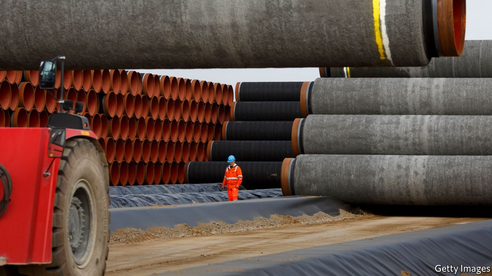
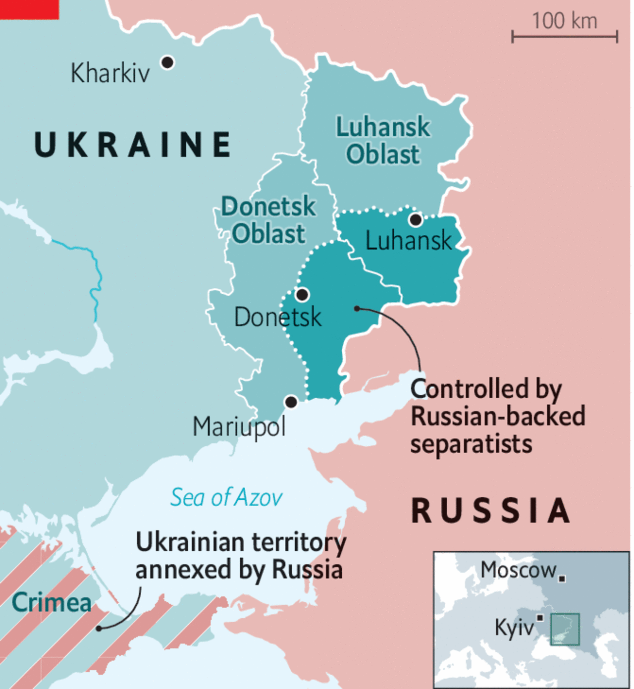

The West imposes swift sanctions on Russia. Can they stop a war?
Germany mothballs the Nord Stream 2 pipeline, to the surprise of many

WESTERN COUNTRIES have moved swiftly to impose a first tranche of economic sanctions on Russia after President Vladimir Putin recognised the independence of two breakaway enclaves in eastern Ukraine and ordered Russian troops to be deployed to them. On February 22nd America, Britain and the EU rolled out measures that include restrictions on the sale of Russian debt, the freezing of assets of Russian oligarchs and their children, banks and parliamentarians—and threatened more if Russian troops attacked territory controlled by the Ukrainian government. Most striking was Germany’s unexpected decision to suspend the permitting of Nord Stream 2 (NS2), an undersea pipeline intended to carry more gas from Russia to Germany.
To some, including some Republican former officials in America, the transatlantic response so far has been sure-footed, not least in the degree of diplomatic co-ordination and the use of intelligence to expose and disrupt Russia’s military plans. The question is whether the sanctions are commensurate with Russia’s attack on the sovereignty of Ukraine, and whether they can deter Mr Putin from sending the 190,000-odd troops he has amassed on Ukraine’s borders to seize more territory.
On February 21st, after a bitter, history-twisting speech, Vladimir Putin signed treaties of “friendship, co-operation and mutual assistance” with the two Russian-backed breakaway statelets, the “people’s republics” of Donetsk and Luhansk. He announced that he would be sending “peacekeeping” troops to the enclaves. A day later, Mr Putin sought and quickly obtained permission from parliament to deploy troops “abroad”. Russia also announced the evacuation of its diplomats from Kyiv, Ukraine’s capital.
The Western sanctions are not—at least not yet—the “massive” response that the West has promised if Russia invades Ukraine. Perhaps inevitably, the debate turned on the question of what counts as an invasion. Initially, senior White House officials declined to use the i-word, noting that the planned deployment of Russian troops to Donetsk and Luhansk only formalised Russia’s barely hidden eight-year presence there. But on February 22nd President Joe Biden changed tone, describing events as “the beginning of a Russian invasion of Ukraine”. He vowed, “I’m going to begin to impose sanctions in response, far beyond the steps we and our allies and partners implemented in 2014. And if Russia goes further with this invasion we stand prepared to go further as with sanctions.” Mr Biden ordered American troops already stationed in Europe to deploy to the Baltic region and Poland, to help buttress the defences of countries bordering Ukraine.
The difficulty for the West will be to calibrate its response. It wants to demonstrate its resolve in the face of Russia’s threats and actions so far. But it also seeks to leave space for diplomacy, maintain Western unity and retain a credible deterrent against an all-out invasion. Much depends on whether Mr Putin’s recognition of Donetsk and Luhansk is an end in itself, or a step to a wider war. America and Britain are convinced it is the latter. “Every indication is that Russia is continuing to plan for a full-scale attack,” says NATO’s secretary-general, Jens Stoltenberg.
In a televised press conference, Mr Putin was asked whether Russian troops would be deployed only to the areas controlled by the two pseudo-states, or whether they would seek to occupy all the territory to which their leaders lay claim, much of which is still in the hands of the Ukrainian government. Mr Putin endorsed their claims but would not say how far he would send his troops: “It is impossible to predict the scenario that unfolds. That will depend on the situation on the ground.”

Dmitri Trenin of the Carnegie Moscow Centre, a think-tank, suggested that, after months of military build-up and high-stakes diplomacy, recognition of the statelets might have been the least risky way for Mr Putin to avoid sending his troops home empty-handed. Recognition could thus be an effort to “escalate to de-escalate”. But so vicious was Mr Putin’s rhetoric against Ukraine, a state he characterised as a Bolshevik invention, that Mr Trenin would not rule out an invasion. The overt deployment of Russian troops in Donetsk and Luhansk, he noted, raised the risk of conflict if, say, Russian troops were hurt in exchanges of fire across the front line.
The hope for a diplomatic solution is receding. French officials have expressed bitterness at Mr Putin’s treatment of Emmanuel Macron, France’s president, who has long sought to entice Russia into security understandings and went to great lengths to give Mr Putin a way out of the crisis. In the early hours of February 21st Mr Macron announced that Mr Putin and Mr Biden had agreed in principle to hold another summit to avert a war. Mr Putin never confirmed this. He also said the so-called Minsk accords of 2014-15, which were supposed to settle the status of Donetsk and Luhansk and which France and Germany had tried to reinvigorate, were dead. Mr Putin also called on Ukraine to demilitarise. In a further bleak development, America’s secretary of state, Antony Blinken, cancelled a planned meeting with his Russian counterpart, Sergei Lavrov, that had been scheduled for February 24th.
With the West turning to sanctions, Olaf Scholz, Germany’s newish chancellor, has the opportunity to lead the European response. For weeks he has endured criticism that Germany had been too passive. Allies grouched at its refusal to arm Ukraine (bar 5,000 much-mocked helmets) and its reluctance to sign up to the most aggressive potential sanctions, such as ejecting Russia from the SWIFT international-payments system.
The biggest irritant was NS2, a completed but not yet operational pipeline designed to double undersea gas deliveries from Russia to Germany. Critics, including eastern European allies as well as successive American administrations, said NS2 would turbocharge Russia’s ability to wield gas as a geopolitical weapon. And by depriving Ukraine of transit fees from an existing land-based pipeline, it risked removing one of that country’s few sources of leverage against its larger neighbour.
Critics and admirers alike were surprised when Mr Scholz declared on January 22nd that he would call off the regulators assessing whether NS2 could start operations. Mr Putin’s move, said Mr Scholz, was “unilateral, incomprehensible and unjust”, and it was time to do “something very concrete” in response. To be sure, the certification of NS2 has been paused, not scrapped. Mr Scholz instructed Germany’s economy ministry to withdraw its assessment, issued in October, that NS2 did not pose a risk to the security of Europe’s energy supplies. That verdict was a precondition for regulators to begin assessing NS2. Meanwhile, Mr Scholz said, Germany would have to diversify its sources of gas (Russia accounts for slightly over half of German imports).
For now, there will be no direct impact on European energy supplies. NS2 would not have come on stream until much later this year anyway. But Russia, which has always sought to insulate its energy relationship with Germany from geopolitical rows, appeared taken aback. Dmitri Medvedev, the deputy head of the national security council and a former president, threatened a “brave new world” in which Europeans would find themselves paying €2,000 ($2,266) per 1,000 cubic metres of gas. (In fact spot prices briefly exceeded that level in December.)
Why did Mr Scholz act now? Mr Putin’s moves undermined the Franco-German strategy of reviving detailed negotiations over constitutional arrangements within Ukraine. The chancellor may also have wanted to forestall the risk of America intervening to kill NS2 itself, as Mr Biden had threatened to do earlier this month. And by moving now Mr Scholz has ensured a more comfortable position for Germany in discussions on sanctions within the EU.
Ursula von der Leyen, the president of the European Commission (the EU’s executive arm) said members had reached political agreement on a “calibrated” response, including sanctions on Russian debt, banks and people, as well as trade with the breakaway regions. Moreover, she added, “We are limiting the Russian government’s ability to raise capital on the EU’s financial markets. We will make it as difficult as possible for the Kremlin to pursue its aggressive policies.” Jean-Yves Le Drian, the French foreign minister, said the decision had been unanimous, despite signs of objection from Hungary; those under sanctions will include some 350 members of the Russian parliament, who are being punished for voting to urge Mr Putin to recognise the governments in Donetsk and Luhansk.
Britain, no longer a member of the EU, said it would use its “economic heft to inflict pain on Russia”. That included freezing the assets of five Russian banks accused of “bankrolling the Russian occupation”. The assets of several oligarchs—Gennady Timchenko, Russia’s sixth-richest man, and Boris and Igor Rotenberg, who are close to Mr Putin’s government—have also been frozen. Some noted dismissively that the three men had long been the subject of American sanctions.
America was first to respond on February 21st by banning investment, trade and financing of the breakaway statelets, and invoked the authority to impose sanctions on anyone operating in those areas. The next day it said sanctions would be aimed at impeding secondary markets for Russian debt, isolating two big Russian banks and freezing the assets of individuals, among them family members of figures close to Mr Putin. In America’s Congress, meanwhile, there were growing demands for stronger action. Bob Menendez, the influential Democratic chairman of the Senate foreign-relations committee, said America had to stop “equivocating” over whether the invasion had started. Despite Germany’s move, he said, America should end President Biden’s waiver on sanctions on NS2 “so that it is definitely dead”. He asked: “When is it that we’re going to be clear to Putin that there are severe consequences for what you do? When he takes another bite after this bite?”
Correction (February 23rd 2022): America banned investment, trade and financing in Donetsk and Luhansk on February 21st, and not, as we accidentally first wrote, January 21st.
For more stories on the potential for, and possible impact of, conflict in eastern Europe, visit our hub